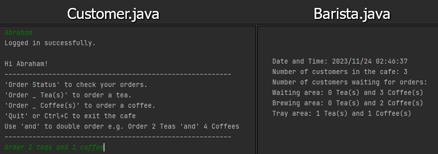

Socket-Based Client-Server System
This project is a socket-based client-server system made with Java. This simulates the functionality of a Cafe where users can order a tea or coffee. The server-client connection is used locally.
There is one server program (Barista.java) that is run with a passive socket to be able to continuously process incoming connections.
Customers connect to the server by creating a socket that connects to the port that the server utilises.
Input/Output streams are used to handle the data that is sent between sockets. Each new customer that connects to the server is run on a new thread, and the accounts for this by avoiding race conditions.
If a customer leaves the server prematurely then their items will be repurposed to fulfill orders more efficiently.